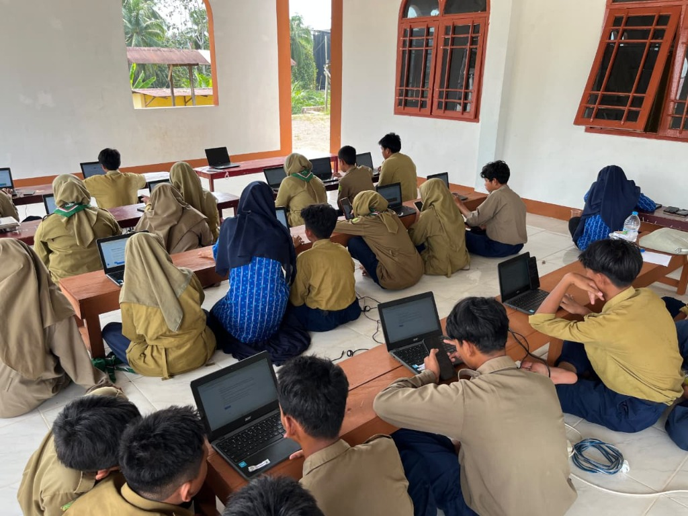
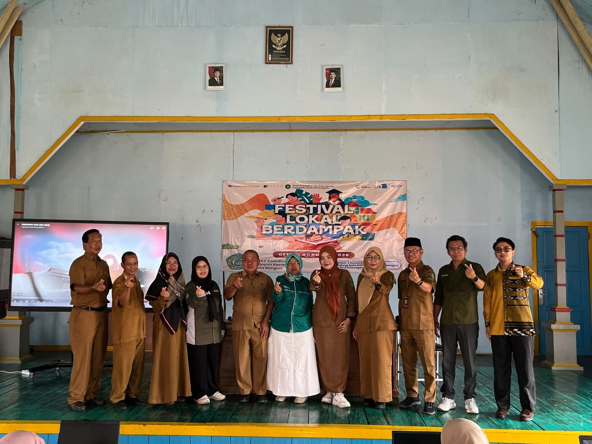
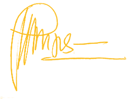
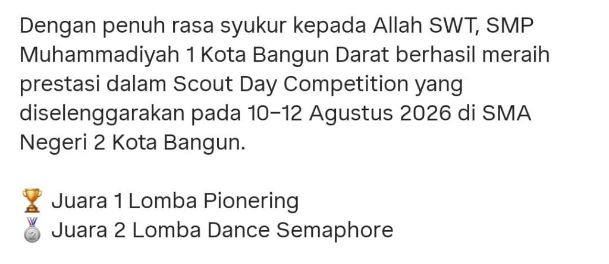
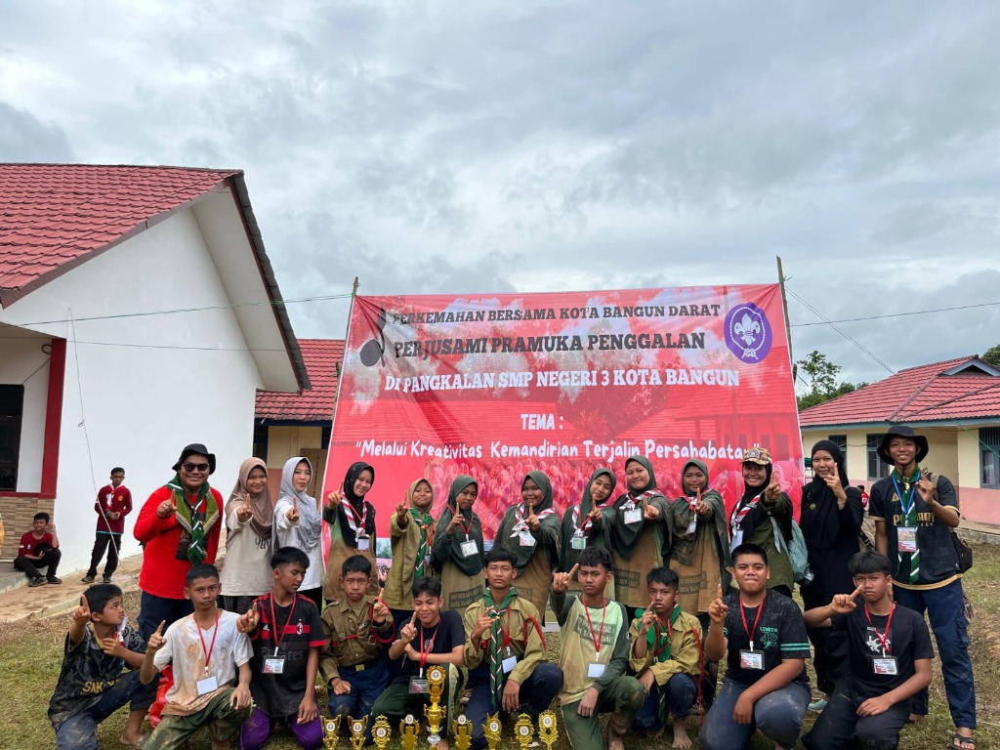
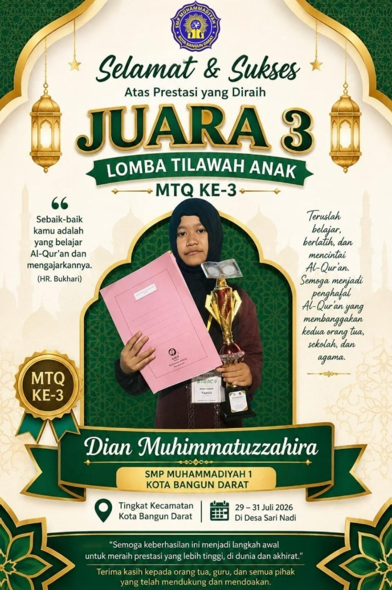
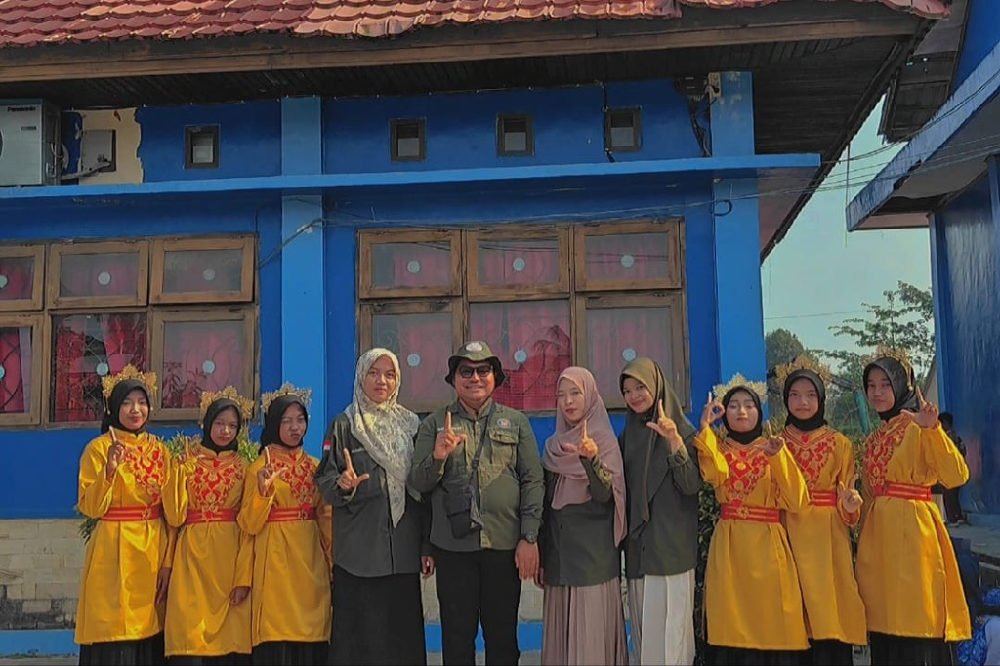
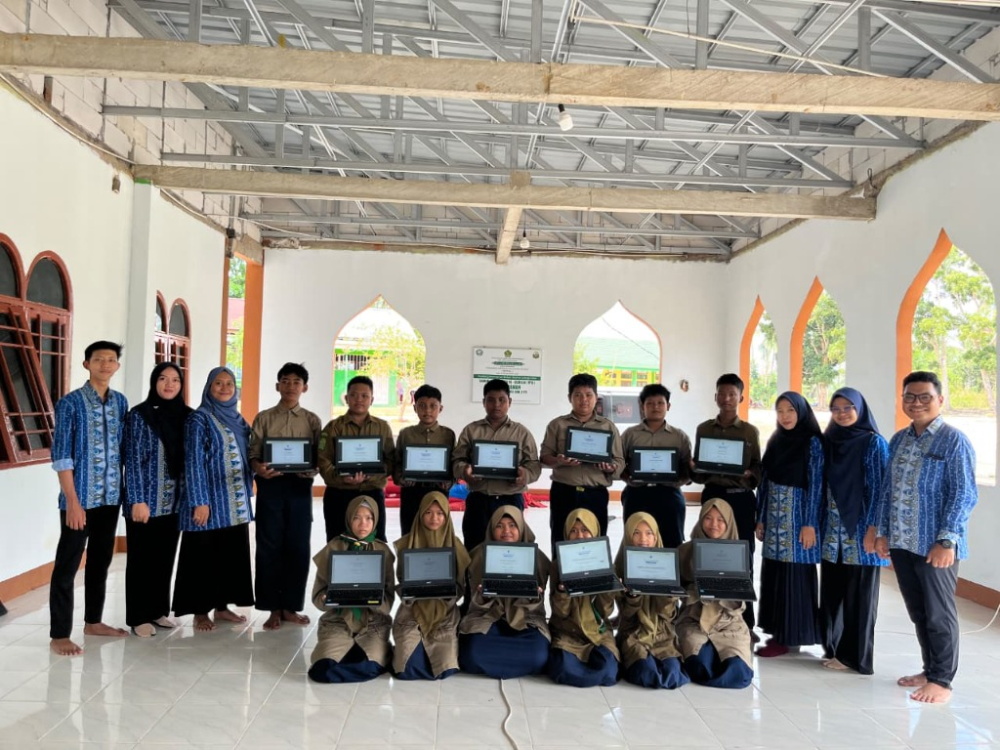
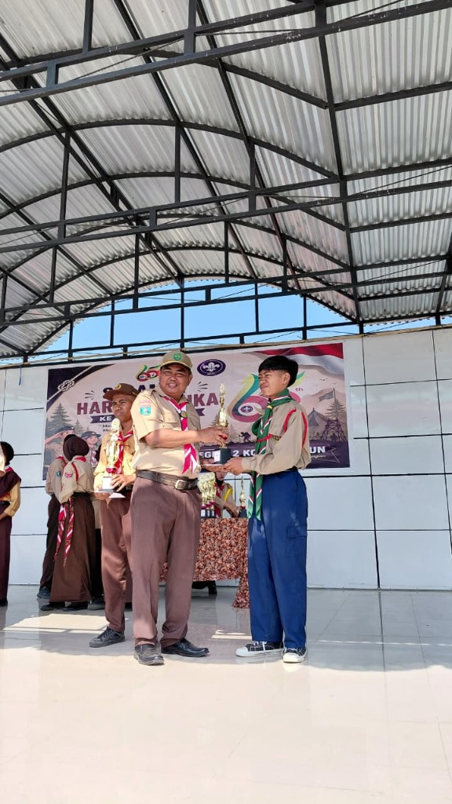
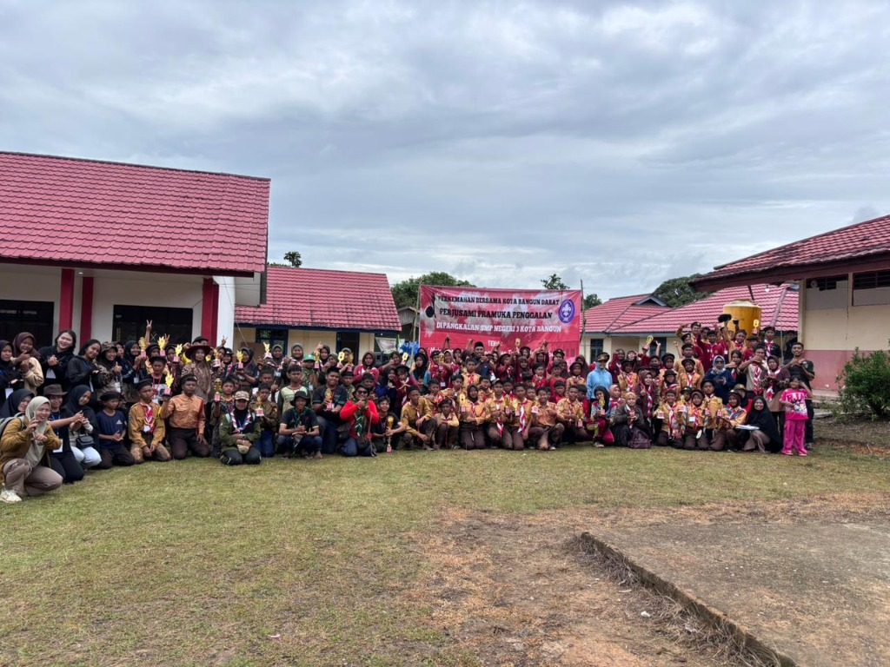

Membentuk Generasi Qur'ani Berakhlak & Menguasai Teknologi AI
Selamat datang di SMP Muhammadiyah 1 Kota Bangun Darat, wadah pendidikan modern di Kutai Kartanegara yang memadukan kedalaman nilai Ismuba (Al-Islam & Kemuhammadiyahan), ketangguhan kepanduan Hizbul Wathan, serta kecakapan digital masa depan dengan fasilitas 1 Siswa 1 Chromebook dan integrasi kurikulum Google Gemini AI.

Generasi Emas Cakap Berpikir Kritis & Ber-AI
Didampingi 6 Guru Tersertifikasi Batik Resmi Muhammadiyah

Kepala Sekolah
Susanto, S.Sos
NBM: 2006 7615 1221959
"Menyiapkan Generasi yang Tidak Hanya Pintar, Tapi Memiliki Jiwa Qur'ani dan Tanggap Masa Depan"
Assalamu'alaikum Warahmatullahi Wabarakatuh.
Di era transformasi digital yang bergerak sangat pesat, anak-anak kita di Kota Bangun Darat berhak mendapatkan pendidikan terbaik yang berimbang. Mereka harus teguh dalam akidah Islam, berakhlak mulia melalui pembiasaan ibadah harian, mandiri melalui kepanduan Hizbul Wathan, sekaligus percaya diri memegang kendali teknologi mutakhir seperti kecerdasan buatan (AI). Kami menyambut para orang tua dan calon siswa untuk tumbuh bersama keluarga besar SMP Muhammadiyah 1 Kota Bangun Darat.
Mengapa Memilih Kami?
6 Pilar Keunggulan Berkarakter & Berkemajuan
Pendekatan komprehensif yang memadukan keagamaan, kecakapan masa depan, dan kearifan lokal untuk masa depan buah hati Anda.
1 Siswa 1 Laptop & Pembelajaran Google Gemini AI
Bukan sekadar teori. Siswa kami belajar dengan laptop Chromebook interaktif dan dibimbing menggunakan kecerdasan buatan (Google Gemini) secara bijak, etis, dan produktif untuk riset serta literasi digital.
Karakter Ismuba & Pembiasaan Sholat Berjamaah
Kurikulum khas Al-Islam, Kemuhammadiyahan, dan Bahasa Arab. Setiap hari diawali Sholat Dhuha, tadarus Al-Qur'an, hafalan Juz 30/29, dan Sholat Dzuhur berjamaah di Kompleks Masjid Nur Hidayah.
Kepanduan Hizbul Wathan (HW) Juara Umum
Mendidik kedisiplinan, ketangkasan, dan cinta tanah air. Kontingen HW kami menyabet Juara Umum Perjusami Se-Kecamatan dengan 10 piala, serta Juara 1 Pionering dan Juara 2 Dance Semaphore.
Pelestarian Budaya Lokal Kutai Kartanegara
Menghargai warisan bumi Kutai. Siswi-siswi kami aktif dalam Sanggar Tari Tradisional Melayu/Kutai adat kuning emas, tampil berprestasi dalam festival seni dan upacara kebesaran daerah.
Program Makan Bergizi Gratis (MBG)
Dukungan gizi sehat bagi tumbuh kembang optimal anak. Sekolah secara aktif mendukung dan menyalurkan program pemenuhan nutrisi agar siswa belajar dengan penuh energi dan fokus.
Biaya Terjangkau & Beasiswa Kader Berprestasi
Misi sosial Muhammadiyah mengedepankan hak pendidikan bagi setiap anak. Tersedia beasiswa prestasi akademik/tahfidz serta subsidi bagi keluarga yang membutuhkan melalui infaq gotong-royong.
Bukti Nyata Karya & Rekam Jejak
Galeri Prestasi & Dokumentasi Sekolah
Klik foto untuk melihat dokumentasi resolusi penuh dan rincian kejuaraan nyata santri-santri SMP Muhammadiyah 1 Kota Bangun Darat.







Legalitas & Kelembagaan Resmi
Terdaftar & Tervalidasi Negara
SMP Muhammadiyah 1 Kota Bangun Darat menyelenggarakan pendidikan dengan perizinan resmi pemerintah Kabupaten Kutai Kartanegara.
Sertifikat NPSN
70058553Ditetapkan berdasarkan SK Ka. Balitbang Kemendikbud No. 3574/G4/KL/2009. Terdaftar resmi di Pusat Data & Teknologi Informasi (Pusdatin).
SK Izin Operasional
B-033/DISDIKBUD/SK/400.3.5/08/2025Berlaku aktif s/d 6 Agustus 2028. Diterbitkan oleh Kepala Dinas Pendidikan & Kebudayaan Kabupaten Kutai Kartanegara.
SK Pendirian Sekolah
B-137/KP3-3/SK/400.3.5/07/2025Ditetapkan tanggal 14 Juli 2025. Status kepemilikan tanah & gedung: Milik Sendiri (Milik Yayasan Muhammadiyah / Wakaf Umat).
Struktur Pembelajaran
Kurikulum Merdeka Plus & Pengembangan Bakat
Dirancang seimbang antara kemampuan akademik, nilai religius, fisik yang sehat, dan penguasaan sains teknologi.
- • Al-Islam (Aqidah, Akhlak, Fiqih Ibadah Praktis)
- • Kemuhammadiyahan (Sejarah Perjuangan & Tokoh)
- • Bahasa Arab Komunikatif
- • Tahsin & Tahfidz Al-Qur'an (Juz 30 & Pilihan)
- • Bahasa Indonesia & Literasi Membaca Kritis
- • Matematika Berpikir Komputasional
- • Ilmu Pengetahuan Alam (IPA Terapan & Sains)
- • Ilmu Pengetahuan Sosial (IPS & Wawasan Kebangsaan)
- • Bahasa Inggris Percakapan Dasar
- • Literasi Google Gemini AI & Tools Digital
- • Praktikum Komputer & Chromebook OS
- • Muatan Budaya Daerah Kutai Kartanegara
- • Pendidikan Lingkungan Hidup Pesisir Mahakam
Ekskul wajib yang mencetak kemandirian, pionering, tali-temali, sandi, semaphore, dan survival ceria di alam terbuka.
Peraih 10 Trofi JuaraSeni bela diri asli warisan bangsa dengan moto "Dengan Iman dan Akhlak Saya Menjadi Kuat, Tanpa Iman dan Akhlak Saya Menjadi Lemah".
Bela Diri & KarakterWadah kreativitas seni gerak siswi dalam membawakan tari adat Kutai dan Melayu pada event akbar daerah dan kejuaraan.
Kostum Kuning EmasBimbingan intensif tajwid, irama tilawah, dan muraja'ah hafalan bagi calon qari/qari'ah yang siap diterjunkan dalam MTQ.
Juara 3 MTQ KecamatanEksplorasi desain grafis Canva, editing video kreatif, coding sederhana, dan prompt engineering Gemini AI bagi siswa berbakat.
Chromebook ReadyOrganisasi intra sekolah setingkat OSIS yang melatih kepemimpinan, musyawarah, manajemen kepanitiaan, dan literasi siswa.
Pelajar TeladanTransparansi Finansial
Simulasi Biaya & Skema Beasiswa
Pendidikan bermutu tidak harus memberatkan. Cek simulasi rincian investasi pendidikan dan kemudahan beasiswa untuk putra-putri Anda.
Pilih Kategori Pendaftar:
* Seluruh biaya dikelola transparan dalam Sistem Informasi Tata Kelola Keuangan Sekolah terintegrasi.
Sudah mencakup atribut seragam, MOS/Fortasi, administrasi, dan peminjaman fasilitas Chromebook praktikum.
Ajukan Beasiswa / FormulirPenerimaan Peserta Didik Baru
Formulir Pra-Pendaftaran Online 2026/2027
Isi formulir ringkas ini untuk mengamankan kuota dan menghubungkan berkas ananda langsung dengan Panitia PPDB via WhatsApp resmi sekolah.
Bantuan & Informasi
Pertanyaan yang Sering Diajukan (FAQ)
Temukan jawaban cepat seputar legalitas, fasilitas Chromebook, pembelajaran AI, dan kegiatan sekolah.
Kunjungi Sekolah Kami
Lokasi Kampus & Kontak Layanan
Pintu kami senantiasa terbuka untuk silaturahmi bapak/ibu orang tua calon siswa dan masyarakat Kota Bangun Darat.
Informasi Sekretariat PPDB
Hubungi layanan informasi kami pada jam operasional sekolah (Senin - Sabtu, 07.30 - 14.30 WITA).